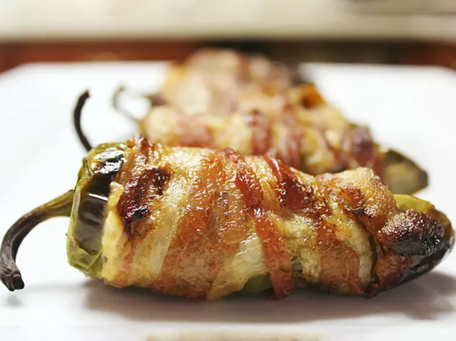

Bacon Wrapped Jalapeño Poppers

Delicious stuffed peppers wrapped in savory bacon.
These jalapeño poppers are creamy in the middle with crispy bacon on the outside. They're easy to make and taste so much better than traditional poppers.
Ingredients
- 1/2cup cream cheese
- 1/2cup shredded sharp cheddar cheese
- 12 jalapeno peppers, halved lengthwise, seeds and membranes removed
- 12 slices bacon
Steps
- Preheat the oven to 400 degrees F. Line a baking sheet with aluminum foil.
- Mix cream cheese and Cheddar cheese together in a bowl until evenly blended. Fill each jalapeño half with cheese mixture. Put halves back together and wrap each stuffed pepper with a slice of bacon. Arrange bacon-wrapped peppers on the prepared baking sheet.
- Bake in the preheated oven until bacon is crispy, 25 to 35 minutes.